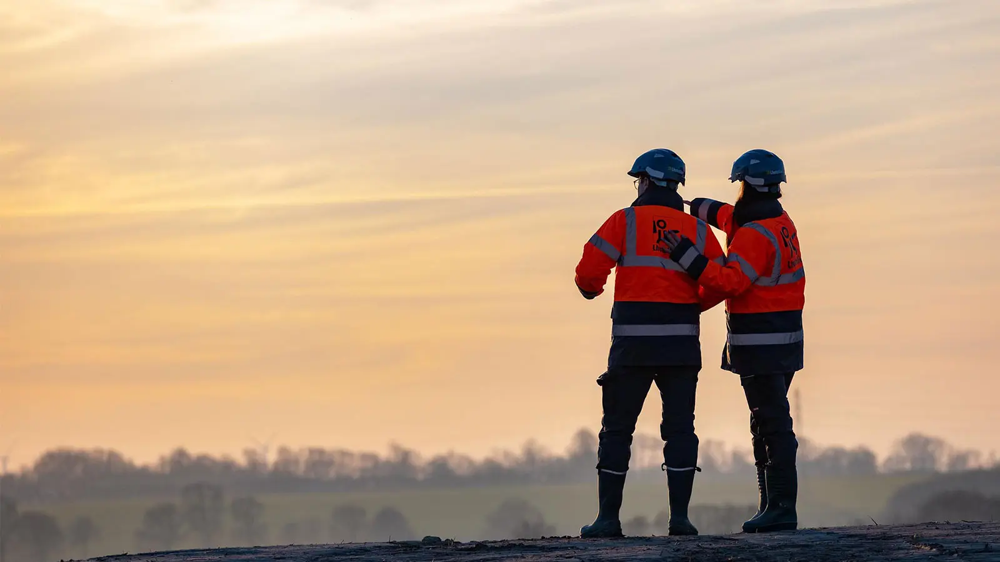

Vidéos Présentations
de Métiers

Contexte du projet
L’objectif était de concevoir une série de vidéos destinées à une campagne de recrutement pour le groupe Lhotellier, mettant en valeur les métiers, les valeurs humaines et l’environnement de travail du groupe.
La série complète comprend six vidéos, dont trois sont présentées ici.
À retenir
- Fil rouge Une même émotion déclinée en 3 variations
- Lecture 1 → 2 → 3 (montée / bascule / résolution)
- Format Capsules courtes pensées pour un visionnage fluide
Organisation et production
Chaque vidéo a été pensée comme un portrait métier, avec une structure courte et efficace, adaptée aux formats de diffusion web et réseaux sociaux.
Le tournage a nécessité une préparation précise afin de s’adapter aux contraintes des lieux et de valoriser les collaborateurs du groupe dans leur environnement quotidien.
Structure
- Capsule 01 Installer le contexte + la promesse visuelle
- Capsule 02 Déformer / accélérer / contraster
- Capsule 03 Conclure + laisser une image finale forte
Djilali - Chef de chantier
Cette première vidéo met en avant le métier de chef de chantier au sein du groupe Lhotellier. Elle valorise le savoir-faire, l’engagement et la rigueur nécessaires au quotidien.
Geoffrey - Qualité Sécurité Environnement
Cette vidéo met en avant le métier de responsable Qualité Sécurité Environnement (QSE) au sein du groupe Lhotellier. Elle valorise l’engagement et la rigueur dans la mise en place de protocoles de sécurité.
Lillian - Chef de chantier
Cette vidéo met en avant le métier de chef de chantier au sein du groupe Lhotellier. Elle valorise le savoir-faire, l’engagement et la rigueur nécessaires au quotidien.